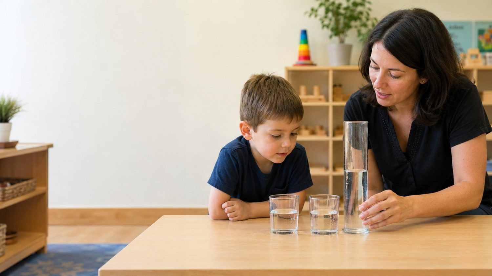

Low-stakes self-checkPattern D • Predict, Observe, and Reconsider
Early Childhood: Physical and Cognitive Development
Growing bodies, symbolic thought, language, scaffolding, theory of mind, and learning through play
Overall progress0%
Maya’s Story
Play reveals body and mind at work
Maya observes a preschool classroom during outdoor play. One child runs across the yard and carefully jumps over a line of cones. Inside, another child concentrates while using child-safe scissors to cut paper strips for a collage.
Later, three children turn cardboard boxes into a veterinary clinic. One announces that a stuffed dog has a fever, another writes pretend notes, and a third listens to the dog’s heart. Maya recognizes symbolic thinking, language growth, fine-motor practice, and cooperative play happening together.
When two children both want to be the doctor, the teacher asks, “What plan could help everyone have a turn?” The children create a sign-up list. The teacher’s prompt supports learning without taking over.
As you read: As you read, look for the ways movement, language, imagination, social interaction, and adult scaffolding support one another.
🔎 Predict, reveal, and reconsider

The appearance of a quantity can change even when the quantity itself remains the same.
A teacher pours equal amounts of water into two matching glasses. Then she pours one glass into a taller, narrower container. What do you predict many preschoolers will say?
🔍 What researchers and educators often observe:
Many preschoolers say the taller container has more. The height is especially noticeable, and they may center on that one dimension before conservation is established.
Now reconsider the child’s response. Which interpretation is strongest?
🧩 Match it up
Match each chapter concept with its best description.
Symbolic representation
Theory of mind
Scaffolding
Zone of proximal development
🏃 Movement supports development.Gross- and fine-motor skills grow through maturation, health, safe opportunity, and repeated practice.
🎭 Symbols expand thinking.Words, drawings, and pretend roles allow children to represent ideas beyond the here and now.
🪜 Learning is social.Conversation, modeling, shared activity, and scaffolding help children do more than they can do alone.
Check your understanding
Why is the pretend veterinary clinic developmentally rich?
Final reflection
Complete this sentence
One important idea I am taking from Chapter 5 is that preschool children learn through…
The chapter emphasizes…
Early childhood development connects physical growth, symbolic thinking, language, memory, perspective-taking, and play.
Consider…
Did your response describe children as active learners who explore, move, communicate, imagine, and solve problems with others?
Add to your thinking…
Young children’s reasoning is developing, not simply deficient. Skilled adults observe, converse, model, and scaffold without taking over children’s thinking.
🌟 You did it! The chapter becomes easier when you pause, test an idea, and compare your thinking with the reading.